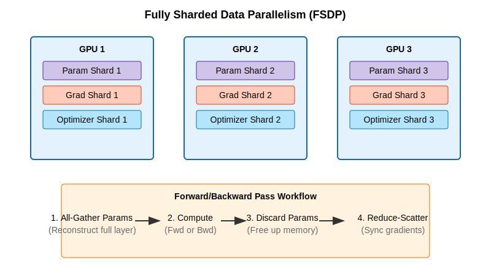
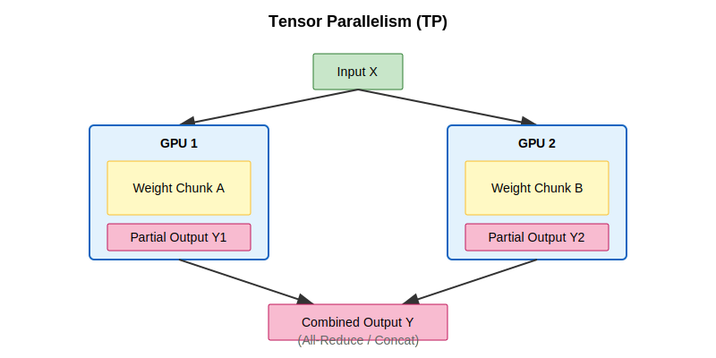
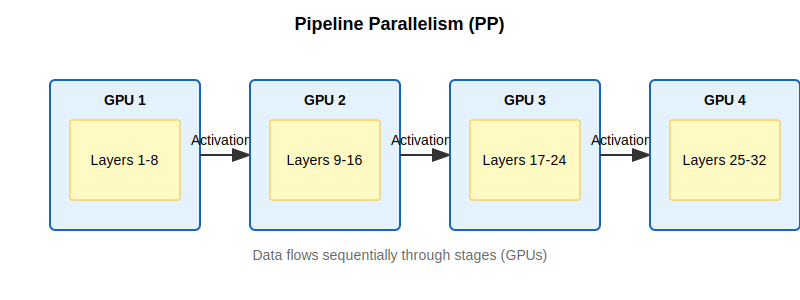
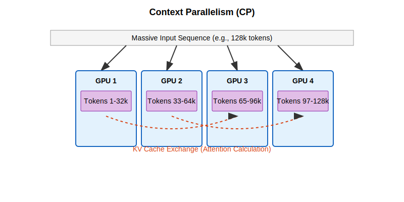
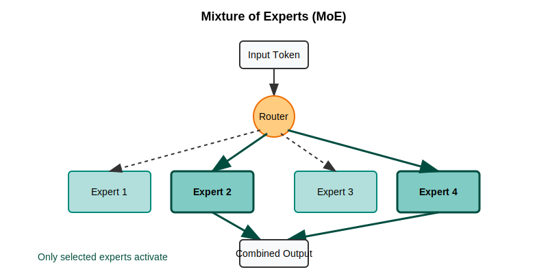
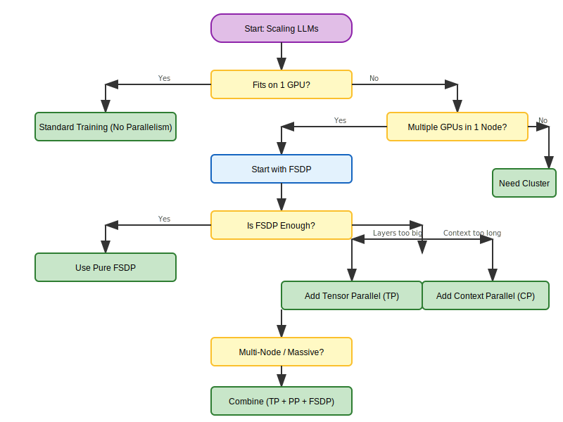

Scaling Large Language Models - Practical Multi-GPU and Multi-Node Strategies for 2025
The race to build bigger, better language models continues at breakneck speed. Today's state-of-the-art models require massive computing resources that no single GPU can handle. Whether you're training a custom LLM or deploying one for inference, understanding how to distribute this workload is essential.
This guide walks through practical strategies for scaling LLMs across multiple GPUs and nodes, incorporating insights from Hugging Face's Ultra-Scale Playbook.
Prerequisites
Before diving in, you should be familiar with:
- Basic Deep Learning: Backpropagation, gradients, and optimizers (AdamW).
- Transformer Architecture: Attention mechanisms, Feed-Forward Networks (FFN).
- PyTorch Basics:
nn.Module,DataLoader, and the training loop.
Why Scaling Matters
Modern LLMs have outgrown single GPUs. Here's why scaling is no longer optional:
- Model size: A 70B parameter model needs ~140GB in FP16 format - that's nearly 2x what an A100 (80GB) can hold
- Training time: Even with 8 top-tier A100 GPUs, training a 13B model from scratch takes weeks
- Context length: Long contexts (32k+ tokens) easily exceed single-GPU memory limits
- Inference speed: For production workloads, distributing inference reduces latency and increases throughput
The solution? Split the workload across multiple GPUs. Let's explore how.
1. Parallelism Techniques Explained Simply
1.1 Data Parallelism (DP)
The idea: Multiple workers with identical instruction manuals (the model), each working on different examples.
How it works:
- Each GPU gets a complete copy of the model
- Each GPU processes different batches of data
- After computing gradients, all GPUs synchronize by averaging their gradients
- Everyone updates their model copy with the averaged gradients
When to use it:
- Your model fits comfortably on a single GPU
- You want to process more data faster
- You need the simplest distributed setup with minimal code changes
Limitation: Memory inefficient - every GPU stores the full model, so you're not saving memory, just increasing throughput.

Tools: PyTorch DDP, Horovod.
1.2 Fully Sharded Data Parallelism (FSDP)
The idea: Like Data Parallelism, but memory-efficient. Each worker keeps only part of the instruction manual and borrows pages from colleagues when needed.
How it works:
- Model parameters, gradients, and optimizer states are sharded (split) across all GPUs
- During forward pass: each GPU gathers the parameters it needs from other GPUs
- After using them, it discards those borrowed parameters to save memory
- During backward pass: same gathering happens for gradient computation
- After backward pass: gradients are reduced and each GPU updates only its own parameter shard
When to use it:
- Your model is too large for a single GPU (typically >10B parameters)
- You want to train bigger models without changing your code much
- You're working on a single machine with multiple GPUs
Real-world impact: FSDP lets you train models 4-8x larger than what fits on one GPU.

[!NOTE] > Understanding ZeRO Stages FSDP is often described in terms of "ZeRO stages" (Zero Redundancy Optimizer):
- Stage 1: Shard optimizer states only (4x memory savings).
- Stage 2: Shard gradients + optimizer states (8x memory savings).
- Stage 3: Shard parameters + gradients + optimizer states (Linear memory savings with N GPUs).
PyTorch FSDP defaults to Stage 3 behavior.
Example: Enabling FSDP in PyTorch
from torch.distributed.fsdp import FullyShardedDataParallel as FSDP
# 1. Wrap your model
model = MyLLM()
model = FSDP(model)
# 2. Train as usual
output = model(input)
loss = output.sum()
loss.backward()
optimizer.step()
Tools: PyTorch FSDP, DeepSpeed ZeRO-3.
1.3 Tensor Parallelism (TP)
The idea: Split individual layers across GPUs - like dividing a massive spreadsheet calculation where each person computes a few columns.
How it works:
- Take a single layer's weight matrix and split it into chunks
- Each GPU gets one chunk and computes its portion of the output
- Results are combined (via all-reduce or concatenation) before passing to the next layer
- This happens at every layer in the model
When to use it:
- Individual layers are too large even with FSDP (e.g., huge attention or FFN layers)
- You have fast GPU-to-GPU connections (NVLink/NVSwitch)
- You're working within a single node (TP doesn't scale well across nodes due to communication overhead)
Sweet spot: TP degree of 2-8 within a single machine with NVLink.

Tools: Megatron-LM, TensorRT-LLM, ColossalAI.
1.4 Pipeline Parallelism (PP)
The idea: Split the model vertically by layers - like an assembly line where each station handles specific layers.
How it works:
- Divide your model into stages (e.g., layers 1-10, 11-20, 21-30)
- Assign each stage to a different GPU
- Send micro-batches through the pipeline: GPU 1 processes batch 1, sends output to GPU 2, then starts on batch 2
- Multiple micro-batches flow through simultaneously to keep all GPUs busy
When to use it:
- Very deep models that don't fit on available GPUs even with FSDP
- Multi-node training where inter-node bandwidth is limited
- Combined with TP and FSDP for massive models
Challenge: Pipeline "bubbles" (idle time) at the start and end of each batch. Use multiple micro-batches to minimize this.

Tools: DeepSpeed PP, Megatron-LM, GPipe.
1.5 Context Parallelism (CP)
The idea: For handling extremely long sequences - different people read different paragraphs of a book, then share key information.
How it works:
- Split a long sequence (e.g., 64K tokens) across multiple GPUs (e.g., 4 GPUs × 16K tokens each)
- Each GPU runs self-attention on its local chunk
- GPUs exchange keys and values to compute cross-attention (how tokens in one chunk relate to tokens in other chunks)
- Results are merged to produce the final output
When to use it:
- Processing very long contexts (64K, 128K, or even 1M+ tokens)
- Document analysis, long-form code generation, or book-length reasoning
- When context length is the bottleneck, not model size
Real-world impact: Context Parallelism enables 100K+ token processing on consumer hardware that would otherwise max out at 8K tokens.

1.6 Expert Parallelism (Mixture of Experts - MoE)
The idea: Specialized consultants - instead of activating the entire model for every input, each token gets routed only to the "experts" it needs.
How it works:
- Replace dense feed-forward layers with multiple "expert" networks (e.g., 8 or 64 experts)
- A gating network decides which experts (usually top-2) should process each token
- Only those selected experts activate for that token
- Different experts can live on different GPUs
When to use it:
- You want a model with 100B+ total parameters but only want to activate 13B per token
- You need better parameter efficiency than dense models
- You're okay with more complex training dynamics
Real-world examples: Mixtral-8x7B (56B total params, 13B active), Grok, DeepSeek-V2.
Trade-off: More parameters with less compute per token, but training can be trickier due to load balancing between experts.

Quick Comparison: Which Parallelism Should You Use?
| Technique | What It Splits | Best For | Memory Savings | Communication Cost |
|---|---|---|---|---|
| Data Parallelism (DP) | Data batches | Models that fit on 1 GPU | None (copies model) | Low (only gradients) |
| FSDP | Model + optimizer + gradients | Models too big for 1 GPU | High (4-8x) | Medium |
| Tensor Parallelism (TP) | Individual layers | Huge layers, fast GPUs | Medium | High (per layer) |
| Pipeline Parallelism (PP) | Layer groups (stages) | Very deep models | Medium | Low (between stages) |
| Context Parallelism (CP) | Sequence length | Long contexts (64K+ tokens) | High (for activations) | Medium |
| Expert Parallelism (MoE) | Experts in MoE layers | Massive sparse models | None (more params, less FLOPs) | Medium |
Rule of thumb: Start with FSDP. Add TP if individual layers are too big. Add PP if you need multiple nodes. Add CP if context length is your bottleneck.
2. Practical Training Strategies
Now that you understand the techniques, here's what to actually do based on your hardware setup.
2.1 Single Machine (2-8 GPUs)
Recommended approach: FSDP, optionally + TP
What to do:
- Start with pure FSDP using PyTorch FSDP or DeepSpeed ZeRO-2/ZeRO-3
- If your model has huge attention or FFN layers that still don't fit, add TP=2
- Use Hugging Face
accelerateor PyTorchtorchrunfor easy setup
Hardware-specific tips:
- Consumer GPUs (RTX 4090, etc.) with PCIe: Stick to TP=1 or TP=2 max
- Server GPUs (A100, H100) with NVLink: You can efficiently use TP=2 to TP=4
- 8 GPUs in one box: FSDP alone often works great for models up to 70B
2.2 Small Cluster (2-16 nodes, ≤128 GPUs)
Recommended approach: 2D or 3D parallelism (TP + FSDP, optionally + PP)
What to do:
- Use TP within each node (e.g., TP=4 or TP=8 per node with NVLink)
- Use FSDP across nodes for data parallelism
- If your model is extremely deep, add PP to split it vertically across nodes
Why this works:
- Fast intra-node connections (NVLink) handle TP's high communication needs
- Slower inter-node connections (InfiniBand) only need to sync FSDP shards
- Minimizes cross-node bandwidth requirements
Pro tip: When using Pipeline Parallelism, set your number of micro-batches to at least 4× your pipeline degree to keep GPUs busy and minimize "bubbles."
2.3 Large Cluster (Hundreds or Thousands of GPUs)
Recommended approach: 4D parallelism (DP × TP × PP × CP)
What to do:
- Combine all four parallelism strategies to handle the largest models
- Carefully map parallelism strategies to your hardware topology
- Use tools like Megatron-LM or Nanotron that support 4D parallelism out of the box
When you need this:
- Training models with 70B+ parameters and 32K+ context windows
- Pretraining from scratch (not fine-tuning)
- Production-scale model training at big labs
Performance expectations:
- With good InfiniBand networking: ~70-80% scaling efficiency
- With excellent setup and tuning: ~85% scaling efficiency possible
Real-world example: Training a 70B model with 32K context on 512 GPUs:
- TP=8 (within each 8-GPU node)
- PP=4 (pipeline across 4 nodes)
- CP=4 (split context across 4 chunks)
- DP=4 (data parallelism for throughput)
- Total: 8 × 4 × 4 × 4 = 512 GPUs
3. Practical Tools Worth Learning
Here's a quick guide to the most useful tools and when to reach for them:
| Tool | When to Use It | Learning Curve | Best For |
|---|---|---|---|
| Hugging Face Accelerate | Any distributed training with minimal code changes | ★☆☆☆☆ | Beginners, quick prototypes |
| PyTorch FSDP | Medium-large models (1-30B) on single node | ★★☆☆☆ | Most common use case |
| DeepSpeed ZeRO | Multi-node training with good documentation | ★★★☆☆ | Production training |
| Megatron-LM | Very large models (70B+), 3D/4D parallelism | ★★★★☆ | Advanced/production at scale |
| Nanotron | Learning/research on modern parallelism strategies | ★★★☆☆ | Education, experimentation |
| vLLM | Fast inference with PagedAttention and KV caching | ★★☆☆☆ | Serving models in production |
| TensorRT-LLM | Maximum inference speed on NVIDIA GPUs | ★★★★☆ | Production inference optimization |
Example: Accelerate Config for FSDP
To get started with FSDP using Hugging Face Accelerate, you can run accelerate config or create a config.yaml like this:
compute_environment: LOCAL_MACHINE
distributed_type: FSDP
fsdp_config:
fsdp_auto_wrap_policy: TRANSFORMER_BASED_WRAP
fsdp_backward_prefetch: BACKWARD_PRE
fsdp_state_dict_type: SHARDED_STATE_DICT
machine_rank: 0
main_process_ip: null
main_process_port: null
main_training_function: main
mixed_precision: bf16
num_machines: 1
num_processes: 8
use_cpu: false
My recommendation for getting started: Start with Hugging Face Accelerate for learning, then graduate to PyTorch FSDP or DeepSpeed when you need more control.
4. Making the Right Choice: A Decision Framework
Still not sure what to use? Follow this decision tree:
Step 1: Does your model fit on a single GPU?
- ✅ Yes → Use standard training (no parallelism needed)
- ❌ No → Continue to Step 2
Step 2: Do you have multiple GPUs in one machine?
- ✅ Yes → Start with FSDP
- ❌ No → You'll need a cluster or smaller model (skip to Step 4)
Step 3: Is FSDP alone enough?
- ✅ Yes → You're done! Use pure FSDP
- ❌ No, individual layers are too big → Add TP=2 or TP=4
- ❌ No, context is too long → Add CP
Step 4: Training across multiple nodes?
- Start with: TP within nodes + FSDP across nodes
- If model is very deep: Add PP to split layers across nodes
- If you have 100+ GPUs and long contexts: Consider 4D parallelism (TP + PP + DP + CP)
Visual decision tree:

5. The Ultra-Scale Cheatsheet
For a comprehensive visual summary, check out this guide from Hugging Face's team:

Conclusion
Scaling LLMs is both an art and a science. The key takeaways:
- Start simple: Most people should begin with FSDP. It handles the majority of use cases.
- Add complexity only when needed: Don't jump straight to 4D parallelism unless you're training at massive scale.
- Match strategy to hardware: TP works best within nodes, FSDP across nodes, PP for extreme depth.
- Tools matter: Use Accelerate to learn, FSDP or DeepSpeed for production.
The techniques here follow logical patterns based on hardware constraints and model architecture. With the right approach, you can scale from a single GPU to thousands, training models that would have been impossible just a few years ago.
Further resources:
- Hugging Face Ultra-Scale Playbook - Interactive guide with more details
- PyTorch FSDP Tutorial - Official getting started guide
- DeepSpeed Tutorials - Comprehensive DeepSpeed documentation